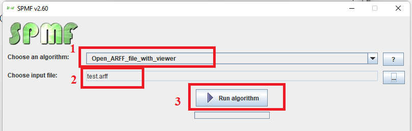
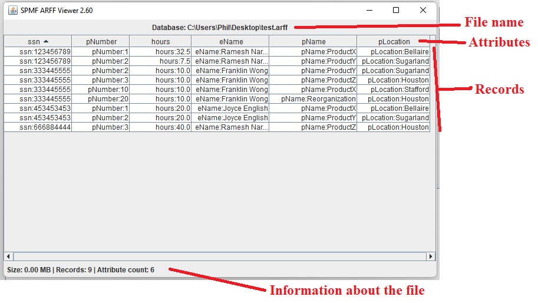

View the content of an ARFF file using the ARFF Viewer (SPMF documentation)
SPMF provides a simple Viewer Tool to view the content of an ARFF file from the graphical user interface of SPMF.
This webpage explains how to use this tool with an example.
How to run this example?
If you want to run this example from the graphical interface of SPMF, (1) choose the "Open_ARFF_file_with_viewer" algorithm, (2) choose the test.arff file as input, and then (3) click "run algorithm"

- If you want to run this example from the source code of SPMF, run the file MainTestARFFViewer, which is located in the package ca.pfv.spmf.tests
- If you want to execute this example from the command line interface of SPMF, then execute this command:
java -jar spmf.jar run Open_ARFF_file_with_viewer test.arff
in a folder containing spmf.jar and the file test.arff which is included with SPMF.
What will be displayed?
After running the example, the content of the file will be displayed by the Viewer. The picture below show the user interface of this viewer, which displays the content using a table view:

This tool provides a simple view of an ARFF file, which can be more convenient than just looking at a text file. It is possible to click on the column headers to sort them. Above is a picture from version 2.60 of SPMF. More features may be added eventually.